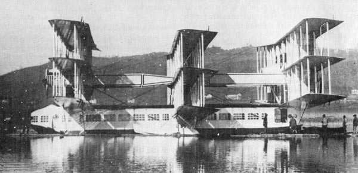

Ever since the dawn of heavier-than-air flight, inventors have tried to design new kinds of aircraft in order to achieve improved performance, introduce new capabilities, or just do something different. In this document we describe some of the stranger aircraft that have actually flown.
This month we celebrate the Caproni Ca 60 Triple Hydro-Triplane, a pioneering flying boat from 1921. Built by Caproni of Italy, a company famous for its multi-engined WWI bombers, this peacetime aircraft was massive for its time, carrying up to 100 passengers, and powered by 8 engines. Even this was meant only as a prototype for an even larger aircraft! Unfortunately a bad crash on its second flight resulted in its development being cancelled.
